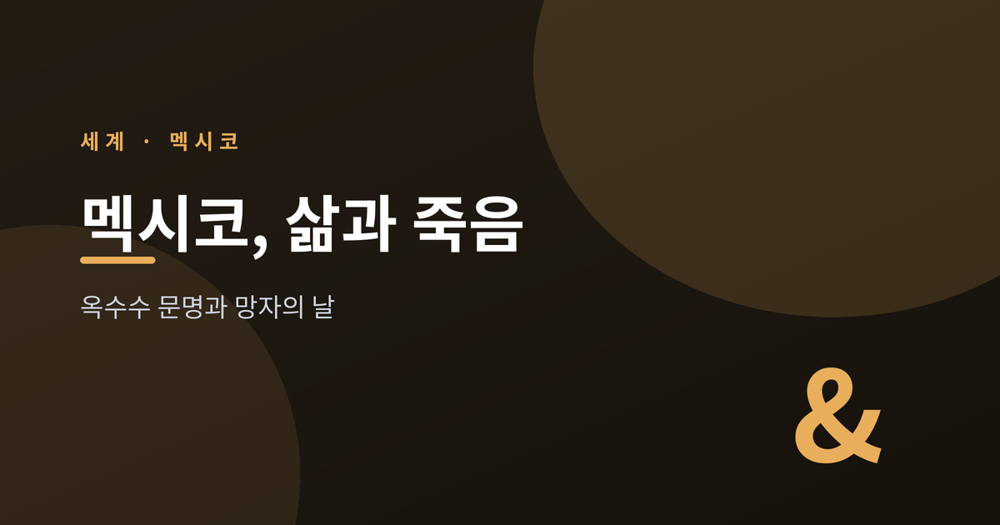
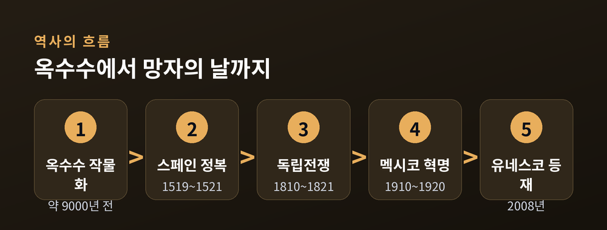
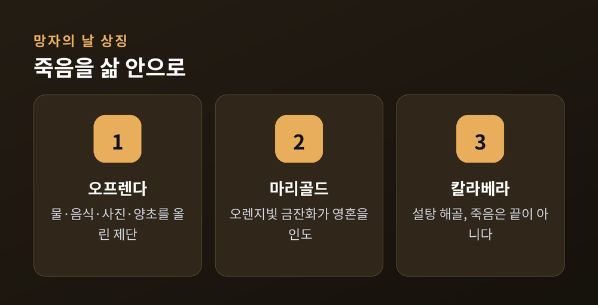
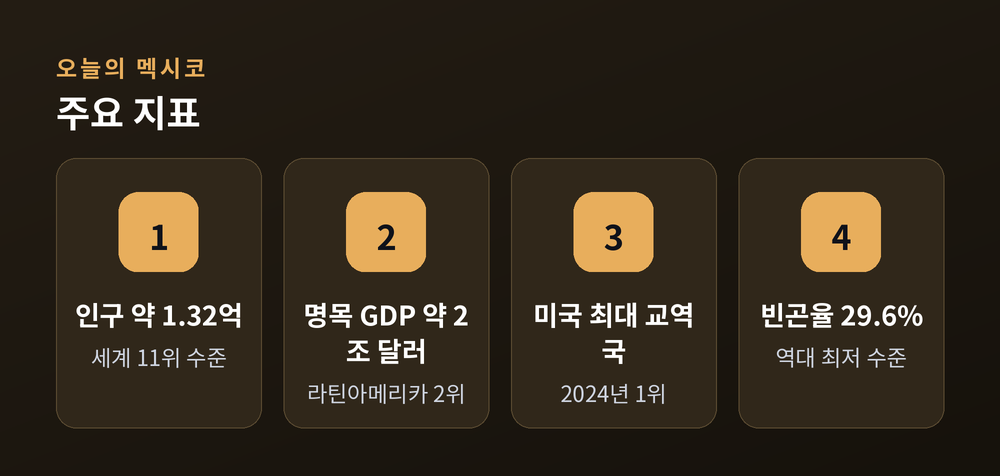
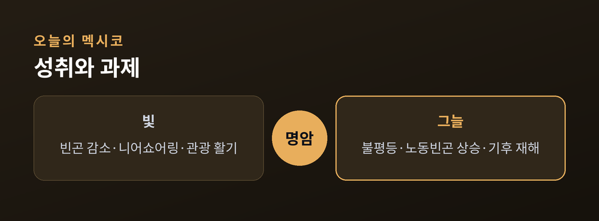

삶과 죽음을 품은 한 나라 이야기

이번 글에서는 멕시코를 옥수수 문명과 망자의 날이라는 두 열쇠로 풀어보려 합니다.
한 알의 풀씨에서 시작된 문명이, 어떻게 죽음을 삶의 일부로 끌어안는 축제로 이어지는지 따라가 봅니다.
먼저 결론부터 말씀드립니다. 멕시코는 "죽음을 끝이 아니라 삶의 연장으로 보는 나라"이며, 그 뿌리는 사람을 옥수수로 빚었다는 오래된 신화에 닿아 있습니다.
멕시코 이야기는 옥수수에서 출발합니다.
오늘날의 옥수수는 처음부터 옥수수가 아니었습니다.
야생 풀 테오신테(teosinte)가 그 조상입니다.
멕시코 남부 발사스 강 유역에서, 약 9,000년 전 사람의 손에 의해 작물로 바뀌기 시작했습니다.
유전학 증거는 이 작물화가 여러 곳에서 따로 일어난 일이 아니라 단일 사건이었다고 말합니다.
흥미로운 대구가 하나 있습니다.
사람이 수천 년에 걸쳐 옥수수를 만들었습니다.
그러나 신화 속에서는 옥수수가 사람을 만들었습니다.
마야의 창조 신화서 포폴 부(Popol Vuh)에 따르면, 신들은 여러 번의 실패 끝에 마침내 옥수수 반죽으로 인간을 빚었습니다.
아스텍의 센테오틀, 올메크의 옥수수 신처럼 메소아메리카 전역에 옥수수 신이 있었습니다.
이곳에서 옥수수는 한낱 식량이 아니라, 사람 그 자체를 이루는 물질이었던 셈입니다.
농사 방식도 지혜로웠습니다.
밀파(milpa) 농법에서는 옥수수·콩·호박을 함께 길렀습니다.
이른바 '세 자매(Three Sisters)'입니다.
콩은 토양에 질소를 주고, 호박의 넓은 잎은 수분 증발을 막으며, 옥수수 줄기는 콩 덩굴의 지지대가 됩니다.
이 작은 공생이 대규모 인구를 먹여 살렸고, 복잡한 문명을 떠받쳤습니다.

1519년, 에르난 코르테스가 이끄는 스페인 세력이 도착합니다.
코르테스는 아스텍에 적대적이던 원주민 세력과 손을 잡았습니다.
통역이자 조력자 라 말린체, 그리고 틀락스칼텍 전사를 비롯한 수천 명의 원주민 동맹군이 곁에 있었습니다.
1521년 5월부터 8월까지, 수도 테노치티틀란을 둘러싼 긴 포위전이 벌어졌습니다.
8월 13일 도시는 함락되었습니다.
결정적 요인 가운데 하나는 천연두 같은 전염병이었습니다.
면역이 없던 원주민 인구가 급격히 줄면서 저항의 힘도 함께 무너졌습니다.
여기서 한쪽만 보아서는 안 됩니다.
정복은 폭력과 전염병으로 원주민 세계에 막대한 파괴를 안겼습니다.
동시에 두 문명이 섞이며 오늘의 멕시코 문화가 빚어진 것도 사실입니다.
언어, 종교, 음식, 축제가 모두 그 만남의 자식입니다.
오늘날 멕시코 정체성의 핵심인 메스티소(혼혈) 문화가 여기서 시작되었습니다.
그 뒤로도 길은 험했습니다.
1810년 9월, 신부 미겔 이달고의 '돌로레스의 외침'으로 독립전쟁이 시작되어 1821년에 독립이 선언되었습니다.
1910년부터 1920년까지는 멕시코 혁명이 나라를 뒤흔들었습니다.
권위주의와 사회 불평등이 그 불씨였습니다.
예전엔 옥수수밭의 평온한 문명이었습니다.
이후엔 정복과 전염병, 독립과 혁명의 격동이 이어졌습니다.
멕시코의 역사는 그 충돌과 융합을 모두 끌어안은 채 흘러왔습니다.

이제 이 글의 중심으로 들어갑니다.
망자의 날(Día de los Muertos)의 뿌리는 약 3,000년 전으로 거슬러 올라갑니다.
중부 멕시코의 원주민은 사람이 죽으면 평안에 이르기까지 아홉 가지 시험을 넘어야 한다고 믿었습니다.
그래서 가족은 도구와 음식, 물을 마련해 망자의 여정을 도왔습니다.
오늘의 망자의 날은 두 흐름이 만난 결과입니다.
원주민의 조상 숭배 전통과, 스페인 정복으로 들어온 가톨릭의 만성절·위령의 날(11월 1~2일)이 융합된 것입니다.
그래서 이 축제는 죽음을 끝이 아니라 삶의 연장으로 기념합니다.
상징 하나하나에 그 마음이 담겨 있습니다.
오프렌다(ofrenda)는 가정과 묘지에 차리는 제단입니다.
숭배가 아니라, 돌아오는 영혼을 환영하기 위한 자리입니다.
긴 여정의 갈증을 풀어줄 물, 음식, 가족사진, 그리고 죽은 이마다 켜는 양초가 오릅니다.
마리골드(cempasúchil)는 오렌지빛 멕시코 금잔화입니다.
나우아틀어 원어는 '스무 송이 꽃'이라는 뜻입니다.
강한 향과 밝은 꽃잎이 영혼을 묘지에서 가족의 집으로 인도한다고 믿습니다.
칼라베라(calavera), 곧 해골은 가장 대표적인 상징입니다.
화려한 아이싱으로 장식한 설탕 해골은 죽음이 끝이 아니라는 것을 알리는 달콤한 표지입니다.
슬픔보다 기쁨과 유희에 가깝습니다.
앞서 본 옥수수 신화의 '죽음과 재생'이 여기서 다시 떠오릅니다.
옥수수가 죽고 다시 싹트듯, 사람도 떠났다가 일 년에 한 번 돌아온다는 세계관입니다.
이 가치는 세계도 인정했습니다.
유네스코는 2008년 멕시코의 '죽은 자를 기리는 원주민 축제'를 인류무형문화유산으로 등재했습니다.

옛이야기에서 오늘로 시선을 옮겨 봅니다.
2025년 기준 멕시코 인구는 약 1억 3,200만 명으로, 세계 11위 수준입니다.
경제 규모도 작지 않습니다.
명목 GDP는 소스에 따라 차이가 있으나 대략 2조 달러 안팎으로, 라틴아메리카 2위이자 세계 12~13위 수준입니다.
미국과의 관계가 특히 눈에 띕니다.
멕시코는 2024년 캐나다를 제치고 미국의 최대 교역국이 되었고, 2025년에도 그 자리를 지켰습니다.
북미 제조업이 이웃 나라로 옮겨오는 니어쇼어링(nearshoring)의 중심 허브로도 떠올랐습니다.
2025년 상반기 외국인직접투자는 전년보다 10% 넘게 늘어 343억 달러를 기록했습니다.

빛만 있는 것은 아닙니다.
밝은 쪽을 먼저 보겠습니다.
빈곤율은 29.6%로 역대 최저 수준까지 내려왔습니다.
최저임금 인상에 힘입어 6년간 약 1,340만 명이 빈곤에서 벗어났습니다.
관광도 활기를 띱니다.
2023년 외국인 방문객은 4,000만 명을 넘었습니다.
그늘도 분명합니다.
불평등은 여전합니다.
상위 10% 가구가 하위 10%의 약 14배를 벌고, 치아파스·게레로·오아하카 같은 남부 지역의 빈곤율은 절반을 웃돕니다.
한편으로는 노동빈곤이 2025년 2분기 35.1%로 오른 지표도 있습니다.
빈곤은 줄었으나 일하는 사람의 가난이 함께 커진 셈입니다.
기후도 무거운 과제입니다.
멕시코는 가뭄과 홍수, 강해진 허리케인에 취약합니다.
2025년 여름 멕시코시티는 기록적 홍수를 겪었습니다.
7월 31일 밤 하루에만 3,800만 ㎥가 넘는 물이 쏟아져 도시가 잠겼습니다.
지난 20년간 극한 기상은 연평균 3.5건에서 5.8건으로 늘었습니다.
치안은 신중하게 보아야 합니다.
최근 비교적 안정적이라는 평가가 있는가 하면, 지역과 시기에 따라 편차가 크고 지속되는 숙제라는 시각도 있습니다.
어느 한쪽으로 단정하기는 어렵습니다.
끝으로 한 마디만 더 드리겠습니다.
멕시코는 옥수수로 사람을 빚었다고 믿었고, 죽음을 손님처럼 집으로 맞이하는 법을 익혔습니다.
빛과 그늘이 한자리에 있는 나라이지만, 그 모두를 외면하지 않고 끌어안는 태도가 이 나라의 결이라고 생각합니다.
"죽음은 끝이 아니라, 일 년에 한 번 돌아오는 손님이다."
11월의 어느 저녁, 마리골드 향을 따라 누군가가 정말 돌아온다고 믿어 보겠냐고 물으신다면, 멕시코는 망설임 없이 그렇다고 답할 것입니다.